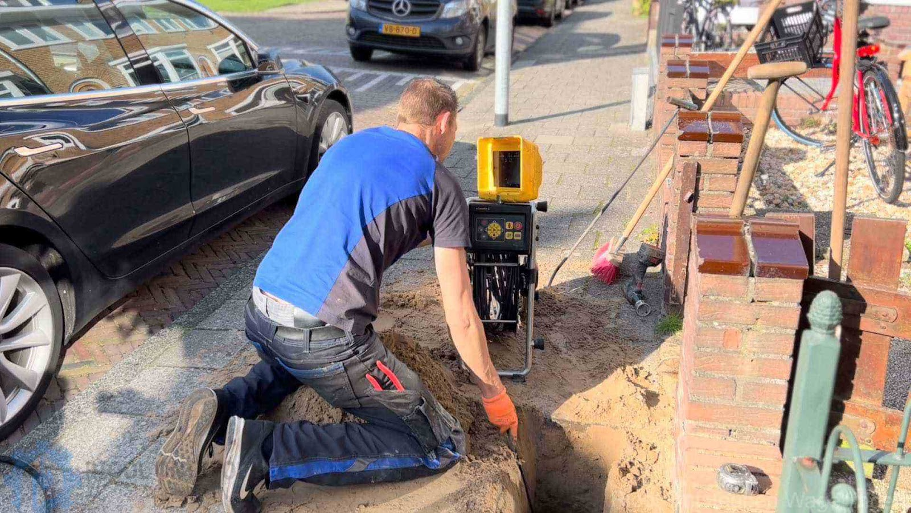
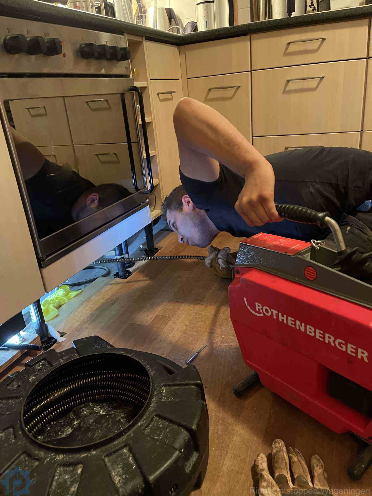
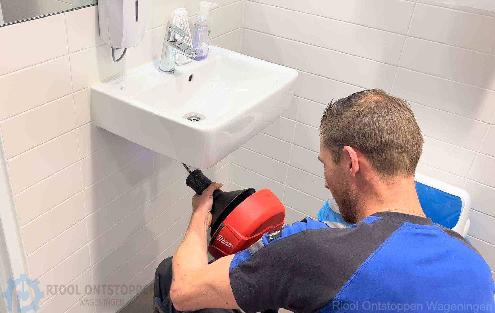
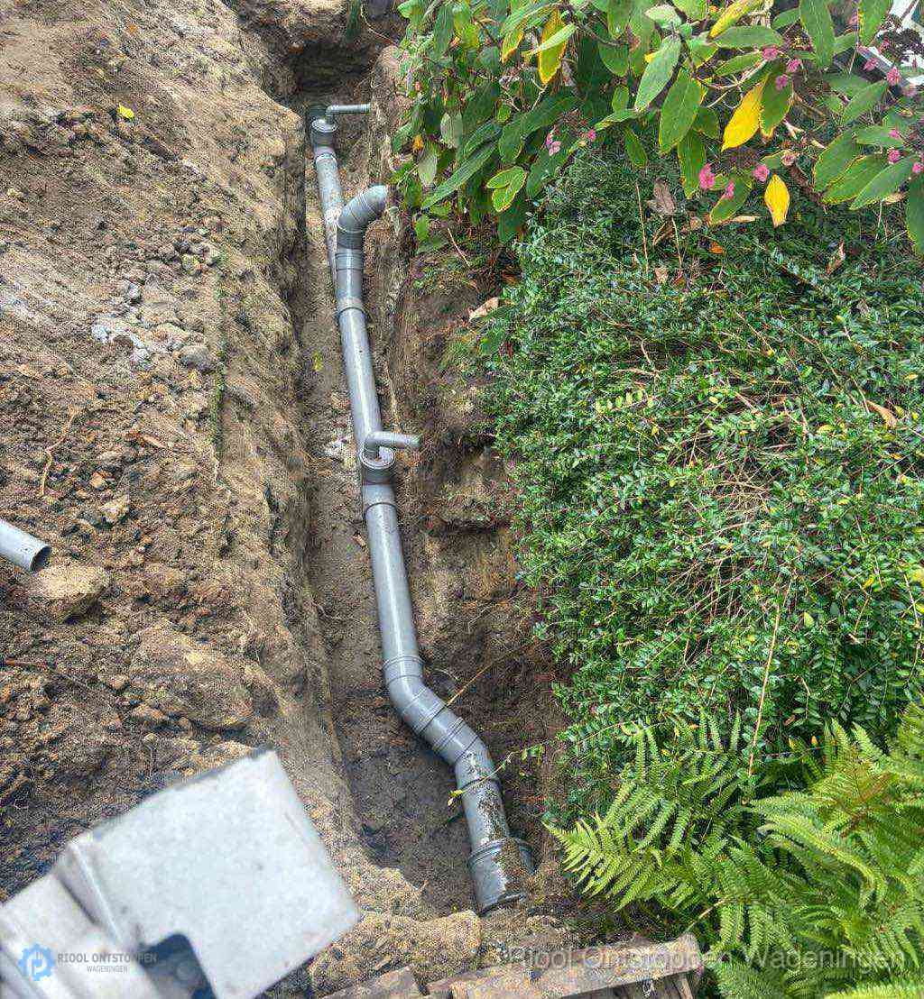
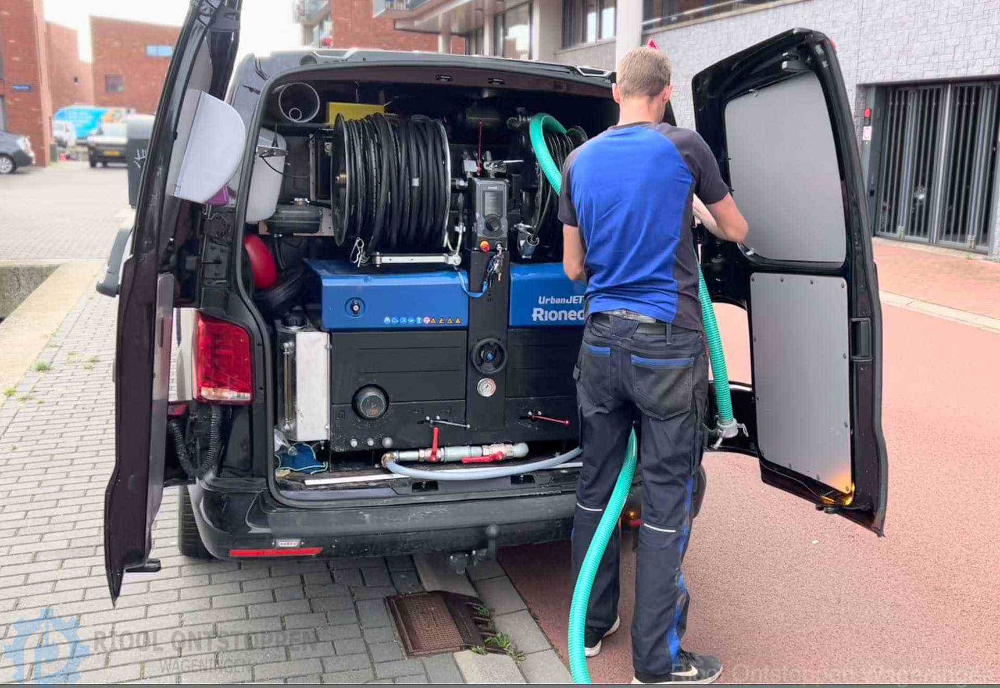
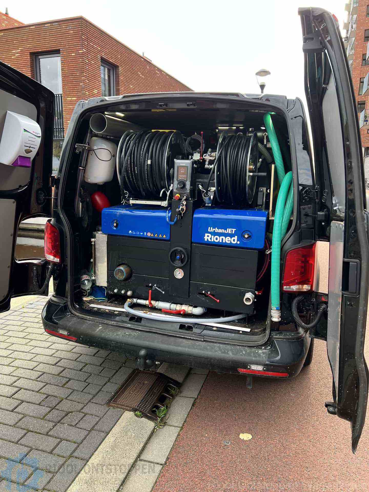

Riool verstopt in Wageningen?
Wij sporen de oorzaak op en lossen hem definitief op. Bel, ook midden in de nacht of op zondag: u krijgt direct iemand aan de lijn.
Bel dag en nacht 085 019 85 48Gemiddeld binnen 30 minuten ter plaatse. Gratis voorrijkosten. U weet de prijs vooraf, en op dezelfde verstopping zit 3 maanden garantie.

Water dat niet wegloopt. Een wc die overloopt.
Die rioollucht door het hele huis, of water dat omhoog komt in de douche als de wasmachine pompt. Wij zien het elke dag. Zo pakken we het aan:

- Afvoer
- In keuken of badkamer. Een afvoer die steeds terugkomt heeft een oorzaak: vet, kalk of een verzakking. We reinigen met hogedruk, kijken met de camera en weten dan precies waar het zit.
- Gootsteen
- Vet stolt in de leiding en bouwt laag over laag op. We spoelen met warm water tot 90 graden onder hoge druk, zodat het vet echt oplost, en controleren het resultaat met de camera.
- Wc
- Weer doorspoelbaar in één bezoek, met spiraal of hogedruk. Zit de oorzaak dieper in de standleiding of het riool, dan ziet u dat op de camerabeelden.
- Riool
- Ook bij leidingbreuk, verzakking of wortelingroei. Wortels frezen we weg met de freesrobot, en met de 512 Hz-sonde vinden we het probleem tot op 10 centimeter nauwkeurig. Dan graven we alleen waar het moet.
- Lekkage
- Loodgieter nodig voor een lekkage? Ook daarvoor staan we dag en nacht klaar.



Zo werken wij
-
1
U belt, dag of nacht
Eén telefoontje naar de spoedlijn en u heeft direct iemand aan de lijn. Telefonisch advies is gratis.
-
2
Binnen 30 minuten voor de deur
De monteur komt met de camera en de juiste apparatuur aan boord en stelt eerst vast wat de oorzaak is.
-
3
Opgelost, voor een vast tarief
We verhelpen de verstopping ter plekke. U kent het tarief vooraf, achteraf volgen geen verrassingen.
Gewoon weer kunnen douchen. Normaal naar de wc. Geen stress meer.
Wat het kost
Vaste prijzen, ook bij spoed. Geen voorrijkosten, geen verrassingen achteraf.
Rioolontstopping, 24/7
€115
voor het eerste half uur, inclusief arbeid en btw
- Daarna, indien nodig€ 38 per kwartier
- Voorrijkostengratis
- Spoed, ook 's nachts en in het weekendzelfde tarief
- Kosten voor machines en materiaalapart, indien nodig
3 maanden
garantie op de ontstopping
Komt dezelfde verstopping binnen drie maanden terug? Dan verhelpen we hem opnieuw, volledig gratis en zonder voorrijkosten.
Bel voor gratis advies: 085 019 85 48
Wat er in de bus zit
De monteur heeft alles bij zich om de verstopping te verhelpen en te laten zien waar hij zat. Zo weet u of het vet was, wortels of een verzakte leiding.
Hogedrukreiniging tot 250 bar
Spoelt de leiding over de hele lengte schoon.
Camera-inspectie
Volgens NEN-EN 13508-2. De staat van uw leiding wordt digitaal vastgelegd.
512 Hz-sonde
Vindt het probleem onder de grond tot op 10 centimeter.
Freesrobot en warm water
Tegen wortelingroei en hardnekkig vet, tot 90 graden.
Onze monteurs werken VCA-gecertificeerd en volgens NEN 3215, met het Kiwa-procescertificaat voor rioolreiniging (BRL K10014). Volledig verzekerd, met AVB tot 2,5 miljoen.
Voordat u belt
Laat ontstoppingsmiddel in de winkel staan
Werkt het niet, dan kan het hard worden en klonteren, en wordt de verstopping hardnekkiger. Het tast ook de binnenkant van uw afvoer aan. Heeft u al een chemisch middel gebruikt? Zeg het ons aan de telefoon: dat is belangrijk voor de veiligheid van de monteur.
Vaatwasser of wasmachine? Kijk eerst bij het filter
Vaak hoopt het vuil zich op bij het afvoerfilter. Haal het eruit, maak het schoon in een warm sopje en zet het droog terug. Loopt het daarna nog niet weg, dan zit het verder in de leiding.
Problemen met uw riool? Bel nu.
Maandag tot en met zondag, 24 uur per dag. In heel Wageningen en omgeving, zonder voorrijkosten.
085 019 85 48E-mailklantenservice@rioolontstoppenwageningen.nl
AdresAgro Business Park 1
6708 PV Wageningen
BereikbaarDag en nacht, ook in het weekend